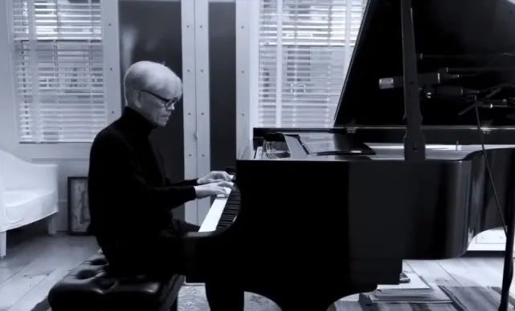
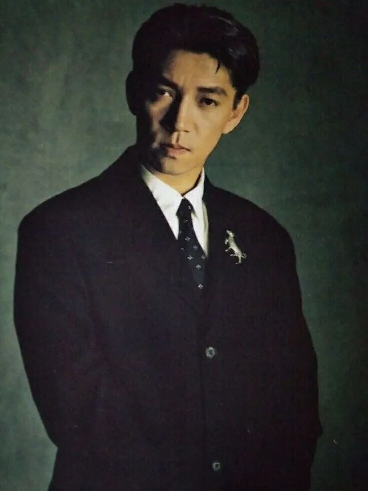

火线｜不能只重“炫”的技术，这些“苦”学科为国计民生提供重要保障——专访华山医院援鄂医疗队总指挥马昕教授
原文链接 备份链接 口述实录·火线 养兵千日用在一时，大型公共卫生事件一发生，这些关键的“苦”学科就会为国计民生，甚至民族存亡提供重要保障。 记者｜黄 祺 武汉新冠肺炎的救治压力趋缓，无论是普通市民还是医护人员，都期待着疫情彻底结束的这一 …

海啸和疾病，都让我们再次注意到自己是自然的一部分。
记者 | 孔冰欣

南洋爪哇岛的热带丛林，金发的战俘向他走来。而他泄露天机的颤抖的眸色里，那段细碎、幽玄、物哀的配乐，早已砌下落樱如雪乱，乱云飞渡，渡不了方寸间无憾的圆满。

辗转北京、大连、长春，人去夕阳斜的帝国暮色中，有找不到的阿嬷、被藏起来的蛐蛐、半生是非转头空的怅然与释然。有幕后的一架走音的钢琴，和两周时间创作、录制了四十余首曲子的他。

他既是上世纪70年代末第一支从日本火到西方的三人乐队YMO（Yellow Magic Orchestra）的成员（学历最高，获“教授”昵称），年轻时兼具古典、先锋、突破、反叛的特质。


也是阅尽繁华后淡淡、温和的老者，信奉“调出自然，万物生音”。把塑料桶倒扣在头上听雨滴的叩打，向海螺吹送轻风，漫步树林里，踩在叶堆上。去非洲，捕捉原始部落舞动的节奏。去北极，带上录音设备，在半融不化的雪水里“钓声”。
坂本龙一。才华、傲慢、不设边界，还有帅，让他几乎拥有了一个文艺icon所需要拥有的一切。
2018年，他来过一次中国。当时，京城文化界的各位大V，基本上都转发了与他相关的微博。2020年，他关心着疫情中的中国家庭，又适时献上了自己的一曲《Aqua》。

事情缘起于北京当代艺术基金会与夏季之声共同发起的“妈妈爸爸生活节2020爱心版”。在春节以来最艰难的日子里，许多卓越的跨界艺术家与创作者，通过在线/视频/直播平台的形式，与宅家“禁闭”的父母、孩子们，分享了艺术的力量。
2月22日，北京当代艺术基金会发布了坂本龙一演奏“Aqua”的视频。值得一提的是，“Aqua”出自坂本龙一二十年前的“治愈系”专辑“BTTB”（指的是Back To The Basic，返璞归真，“专辑中有一部分音乐，使我想起了自己的童年”），是其代表作之一。
他留下了一段鼓励中国小朋友的话：“不能出门玩耍很难过吧，但既然现在不用去学校了，就在家尽情做好玩的事吧。不要只是玩游戏哦，用这些时间，去读很多书，听很多音乐。画画，写诗，弹奏乐器，看电影也是不错的选择。还有别忘了在家里做一点体操运动。努力渡过难关吧。”
坂本龙一还寄语，知道现在对每一个人来说都是难熬的时刻，但希望大家能够尽量不要慌乱，把握情况，冷静地行动。虽然要和身边的人“保持距离”，我们还是可以守望相助。由衷地祈祷不要再有更多的人遭受不幸。一定要平安。
2月29日晚，坂本龙一在另一场线上音乐会上使用的乐器火了——“中国武汉制造”的吊钹。曲终，教授对着镜头，用中文说：“大家，加油！”
快“奔七”的坂本龙一，因为贝托鲁奇的电影《末代皇帝》作配乐而为中国的普罗大众所知。《末代皇帝》为他赢得了第60届奥斯卡最佳原创配乐奖，而他和贝托鲁奇再次合作的《遮蔽的天空》，则拿到了第48届美国电影电视金球奖的最佳电影配乐奖。此外，他曾为巴塞罗那奥运会开幕式谱曲并担任指挥，也是小李子苦心志劳筋骨玩水枪终喜摘奥斯卡影帝桂冠的那部《荒野猎人》的音乐监制。
当然，对很多因为“Merry Christmas, Mr. Lawrence”而入坑的粉丝来说，教授是自带bgm的男人，大卫·鲍伊再妖，在这部电影里，也没能妖过那绵绵音符里的无尽情思。

除了音乐、电影，坂本龙一更对种族、战争、环境和气候等议题，始终保持着关注。
充满激情的青年时代，他热衷左翼理论、积极投身社会活动。四十多年后，日本经历了“3·11”大地震后的福岛核泄漏事故，置身于反核示威人群，他感叹，（日本）已经好多年“没有过这样的反抗行动了”。
2014年，坂本龙一确诊咽喉癌。作为癌症幸存者，他对疾病有着切身的痛感，提及“曾在化疗时放声痛哭”。他坦承自己是一个软弱的人，但软弱不等于无能，也许，这样的“软弱”，恰恰触发了更多同理心，包括对这次疫情的。
事实上，和他最喜欢的日本历史人物夏目漱石一样，坂本龙一复杂、敏感，经常处在一种中间的位置，那是东方和西方的中间，也是传统和现代的中间，更是公众和个人的中间。
希望教授就这么静静地走下去。头发依旧浓密，眉目依旧动人，做音乐的时候，笑得依旧天真。
近日，坂本龙一接受了《新民周刊》的专访，谈了谈他对疫情、对音乐的一些思考。

《新民周刊》：你从纽约专门录制钢琴音乐现场视频，为战疫中的中国人鼓劲。之所以选择“Aqua”这首曲子，有什么特殊的用意吗？
坂本龙一：其实这次录制了“Aqua”和“Energy flow”两首曲子，因为“Aqua”的录制质量更好，所以选择了它。在疫情蔓延的戾气之中，我想这两首曲子可以让听者的心情平静一些。
《新民周刊》：新冠肺炎疫情暴发以来，日本方面种种援助行为令中国人感动。而面对疫情渐渐不容乐观的日本，在日华人也开始走上街头，为日本朋友免费发放口罩。中日两国一衣带水，你如何理解这“投我以桃，报之以李”的情感？你对两国间的关系，有怎样的期许？
坂本龙一：新型冠状病毒疫情对两国来说都是严峻的考验，希望在两国互相帮助的状况下，国民间也可以更了解彼此，增进感情。这就是中文里说的“塞翁失马，焉知非福”吧。
《新民周刊》：当下的世界面临疫情的巨大挑战，你觉得艺术抗疫的作用，主要体现在哪些方面？
坂本龙一：艺术和音乐，不具备实际生产能力，也不能用来果腹。然而从人类在这颗星球上诞生的那一刻起，我们就从未中断过从事艺术和音乐相关的活动。我也不知道理由是什么，但人类的生存，离不开艺术和音乐，这就是不争的事实吧。
《新民周刊》：这次，你的音乐，不仅为家长们演奏，也为孩子们演奏。艺术如何拉近代际距离、促进爱的交流？
坂本龙一：也许是因为音乐是从0岁的婴儿到老人，都可以一起拍手，一起晃动身体，来享受的吧。即使彼此语言不通，也可以一起沉醉在音乐里。
《新民周刊》：你想对被疫情所困的人们送出什么建议和祝福？
坂本龙一：病毒的预防和应对方法请听取专业人士的意见，我也会这样做。
几年前我因为一场大病，时隔几十年突然有了很多闲暇时间，在这段时间里听了许多之前从未听过的作曲家的音乐。有了许多的新发现，喜欢的音乐也变得更多了。
我想大家在日常繁忙的学习和工作中，应该有许多想要做却没做的事情吧，利用这段时间去深入地尝试一下呢？
《新民周刊》：人类在面对未知的病毒和根深蒂固的顽症时，显得那么脆弱。这次疫情暴发让我们措手不及，而2014年，你被查出喉癌。你现在怎么看待生死问题？
坂本龙一：我每天需要花不少心力去处理日常工作和琐事，很少会去思考生死这样的长远深刻的问题，然而当疾病和像这次的疫情一样非日常的状况突然发生的时候，我想每个人都不得不去思考这些问题。实际上我也对罹患癌症这件事心存感激，因为它让我再一次意识到平常被遗忘的重要事情：我的生命，以及我的身体，是从属于自然的。
《新民周刊》：你学古典音乐出身，却成为了日本现代音乐的推动者和革新者，风格多变。其实，你年轻时也是左翼热血青年，看毛泽东的著作，听左派马克思主义者柄谷行人的讲座。左翼思想是否直接影响了你的音乐？
坂本龙一：我想没有直接的影响。年轻的时候，我觉得自己做的音乐是否也应该是有政治意味的，思考过什么是有政治意味的音乐。但后来我的想法也发生了变化，音乐虽然会受到当时的政治、经济或者是媒体的影响，然而制作音乐本身，有音乐的理论、语法和感情去支撑，不需要过度受到政治或经济等外部因素的影响。
《新民周刊》：创作音乐、出演电影，似乎你干什么，都能干成。因此，当年的你心高气傲，不过，你在接受媒体采访时，坦言现在的自己不会和那时的自己做朋友。你觉得曾经的反叛不够有深度？现在呢，是否足够沉淀了？
坂本龙一：对，我觉得自己年轻的时候是一个非常自私而傲慢的家伙。如果现在我遇到年轻时候的自己，会觉得这家伙是实在太自以为是了，也不会愿意跟他交朋友。
《新民周刊》：在中国，你最被人熟知的是电影《末代皇帝》的配乐。同时，你最经典的曲目之一“Merry Christmas Mr. Lawrence”，也让中国的文艺青年百听不厌。这首“Merry Christmas Mr. Lawrence”，你是否会演奏到“审美疲劳”“不堪忍受”？在创作生涯里，你有最偏爱的专辑或曲子吗？
坂本龙一：尤其是在制作了“Merry Christmas Mr. Laurence”的主题曲之后，因为大家都只要求听这首曲子，我不高兴再弹它，大概有10年左右的时间没有再弹过。
自己写的音乐都像自己的孩子一样，不会有亲疏之分，也不存在最喜欢哪首了。
《新民周刊》：2011年，福岛核泄漏事件后，你和朋友在现场找到一架曾被海啸淹没过的钢琴，这架钢琴已经严重走音，但你还是用它弹奏了一首不安、短促，甚至有些刺耳的音乐。如今，你更追求一种“自然的声音”，比较排斥人为的校准，为什么？你觉得自然生态和人类文明的矛盾是难以调和的吗？
坂本龙一：在我看来，人类就是稍微偏离了一点自然轨道的（有点儿坏掉的）猴子。不愿遵从自然原理而活，而是总想着要勉强制造出自己独特的环境。文明如此，金钱、音乐也是如此，都不是自然的产物。
而海啸和疾病，都让我们再次注意到自己是自然的一部分。
《新民周刊》：你是否认为人们不再严肃思考，不再关心沉重话题？
坂本龙一：全世界都有这样的倾向，经济的速度和节奏在支配着生活。我想人们应该尝试着放慢自己的脚步。
制作音乐和思考哲学，需要充足的时间。培育森林，养育孩子也是如此。
《新民周刊》：去年，纪录片《坂本龙一：终曲》在中国院线上映，记录了你在2012-2017年之间的生活轨迹。那么能说说近两年你的生活状态吗？下一阶段，你又有哪些新的计划？
坂本龙一：有好多同时进行的项目，不能一次说清。最近有点太忙了，我也需要放慢脚步，希望可以努力用充足的时间来集中做一件事。


· 深度好文 | 特朗普及西方政客们热衷炒作“中国病毒”的真正目的
新民周刊所有平台稿件， 未经正式授权
一律不得转载、出版、改编或进行
与新民周刊版权相关的其他行为，违者必究


原文链接 备份链接 口述实录·火线 养兵千日用在一时，大型公共卫生事件一发生，这些关键的“苦”学科就会为国计民生，甚至民族存亡提供重要保障。 记者｜黄 祺 武汉新冠肺炎的救治压力趋缓，无论是普通市民还是医护人员，都期待着疫情彻底结束的这一 …
原文链接 备份链接 这次旅行因新冠疫情而改变，留下的是人生中一次难忘的记忆，身在海外不能归家，发挥智慧，远程办公，与战斗在一线的同事们共同战“疫”，相信春天一定会到来。 文 | 李 莹 鼠年春节，我的旅程因新冠疫情变得离奇。 加勒比邮轮 …
原文链接 备份链接 燃财经（ID:rancaijing）原创 作者 | 闫丽娇 编辑 | 周昶帆 进入3月，很多行业开始陆续复工，“影视行业何时能复工”依然牵动着很多人。 在疫情持续蔓延的50多天里，影视行业受到了前所未有的冲击。贺岁档电 …
原文链接 备份链接 荷兰人平时看起来甚至有些淡然，不像南欧人那么热情浪漫。但到了需要帮助别人的时候， 一般都会尽力而为，不带附加条件。 文 | 王巧丽 正视新冠病毒的第一天 晚上7点钟， 荷兰人守在电视机前， 等着首相马克·吕特讲话。 …
原文链接 备份链接 “相关国家要抓住疫情防控‘窗口期’”——这句话，世界卫生组织总干事谭德塞说了很多次，最早的警告，是在中国新冠肺炎疫情还十分严重的2月初。然而，他发出的警告，似乎并未让更多国家采取必要的行动。 2月4日，谭德塞在日内瓦 …